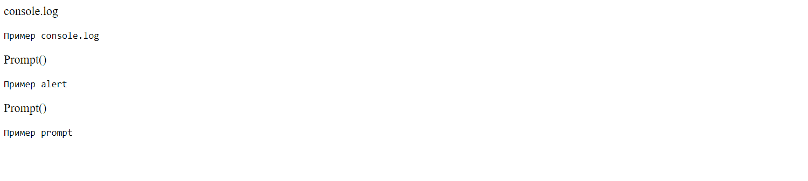
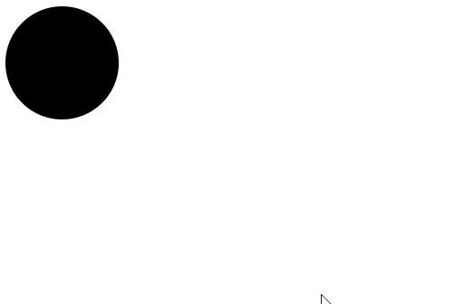

1. Задание 6.8.2 — Привет, мир!
Требуется создать страницу с текстом «Посмотри в консоль, там что-то важное». В консоли страницы при запуске должна отображаться информация «Привет, мир!».
Требуется создать страницу с текстом «Посмотри в консоль, там что-то важное». В консоли страницы при запуске должна отображаться информация «Привет, мир!».
Создайте обработчик события — клик для элемента с id consolLog, при клике на этот элемент должен отображаться alert c текстом описания метода:
Создайте страницу с круглым элементом, при клике на который цвет меняется в следующем порядке: зеленый - желтый - красный - зеленый - желтый - красный и т.д. Один клик — одна смена цвета. Изначально цвет элемента чёрный.
Создайте страницу с ссылкой, при клике на которую появляется окно для ввода текста. При вводе текста в окно ввода в ссылке должен меняться текст на введенный.
Создайте страницу с формой, где есть с поле ввода, кнопка отправки и текстовый блок с id duplicateField. При вводе текста в поле ввода (input) текст должен дублироваться в текстовый блок с id duplicateField.
При нажатии кнопки «Вывести текст в консоль и удалить из формы» текст, написанный в input, должен быть выведен в консоли, а поле ввода и duplicateField должны быть очищены.
Pешение задачи «Светофор» модифицировано таким образом, чтобы есть три разных круга (как на светофоре), смена цвета происходит при клике на любой из них. Каждый круг может принимать только один из цветов. При этом, когда один из кругов становится «цветным», остальные становятся черными. Порядок смены цвета тот же, что и в изначальном задании.